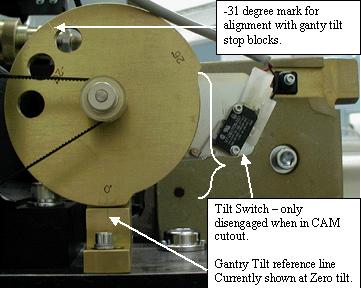
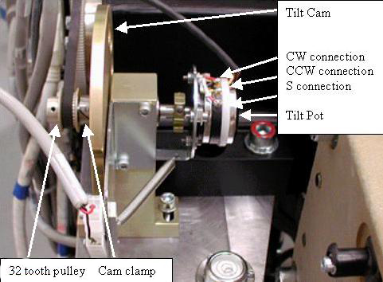

Operating Documentation
Direction 5307452-8EN, Rev# 4
Discovery CT750 HD Service Methods - Adv
Operating Documentation |
| Required Persons | Preliminary Reqs | Procedure | Finalization |
|---|---|---|---|
| 1 | Timing Not Applicable | 30 mins | 15 mins |
Procedure to adjust and characterize the gantry tilt potentiometer.
| Last Revised: | 23 January 2008 |
| Item | Qty | Effectivity | Part# | Manufacturer | |
|---|---|---|---|---|---|
| Standard FE Toolkit | 1 | - | - | - | |
| Shock Hazard | |
| Voltage Present | |
| No service on left side while energized. |
| Condition | Reference | Eff |
|---|---|---|
Gantry 120 VAC power is required during this procedure. | - | - |
Only trained service personnel should service the GE CT scanner. | - | - |
Remove Right and Left Gantry Covers.
| CRUSH HAZARD. | |
| UNEXPECTED GANTRY ROTATION CAN CAUSE SERIOUS INJURY. | |
| Never service the gantry with the axial drive enabled. |
Turn off 2 switches (Axial Drive and HVDC) on the Service Switch Panel, leaving the 120V AC power on.
| Perform this procedure from the front only. | |
Make sure the gantry is physically at zero degrees by looking at the zero degree indicator on the tilt cam. See Illustration 1.
| NOTE: | For sites with limited service access to the gantry left side, use the service tool, select Diagnostics > System Troubleshooting Tool > Gantry Display to view actual tilt data. |
Illustration 1: Tilt Cam

With the gantry powered up with 120VAC, there should be 5V DC at the tilt potentiometer. Use a voltmeter to measure across “CCW” (+) and “CW” (-) making sure to note the exact reading. See Illustration 2 for location of these connections.
Illustration 2: Tilt Cam and Pot Side View

Divide the reading in half for use in the next steps. One half the total voltage read in the previous step will be called the “Voltage Centerpoint” which should be about 2.5V.
If the voltage reading is not correct, you will need to loosen the set screw for the 32 tooth pulley as seen in Illustration 2 so the pot shaft can be turned without the pulley and belt connected.
Use a voltmeter to measure “S” (+) and “CW” (-). If it does not read the Voltage Centerpoint +/- 0.2V, then turn the shaft by rotating the Tilt Cam until the potentiometer reads the Voltage Centerpoint value.
With the position determined, tighten the setscrews on the 32-tooth driven pulley. The belt will then hold the shaft in place.
Loosen the socket head cap screw on the CAM clamp as seen in Illustration 2.
Set the CAM to the zero degree mark (the micro switch is disengaged when this mark is lined up) as seen in Illustration 1.
Tighten the socket head cap screw on the CAM clamp.
The potentiometer is now aligned to the CAM. 0 degrees Tilt = Voltage Centerpoint +/- 0.2V on the potentiometer.
Verify the gantry displays zero degrees when the tilt cam is also showing zero degrees.
Perform Tilt Characterization.
Run the Tilt Characterization procedure from the Service Desktop, Calibration > Mechanical Calibration.
Select the [Characterize Tilt] button and follow the instructions on the screen.
| NOTE: | When not in the Service Mode, normal tilt button function provides 0.5 degrees per button press, which is not enough resolution for proper characterization. On the Service Panel, set Service Mode switch S4 to ON to enable a fine tune adjustment of the tilt angle. Remember to turn S4 OFF when done. |